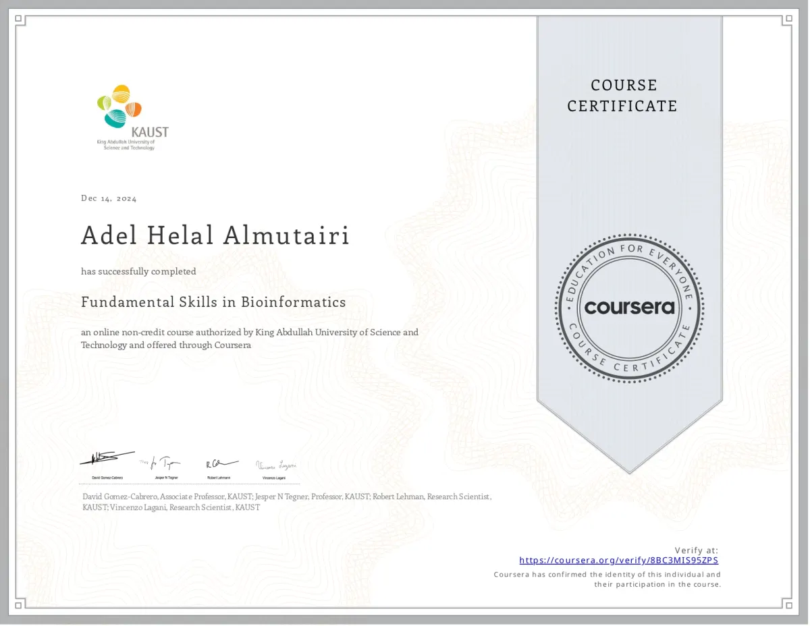
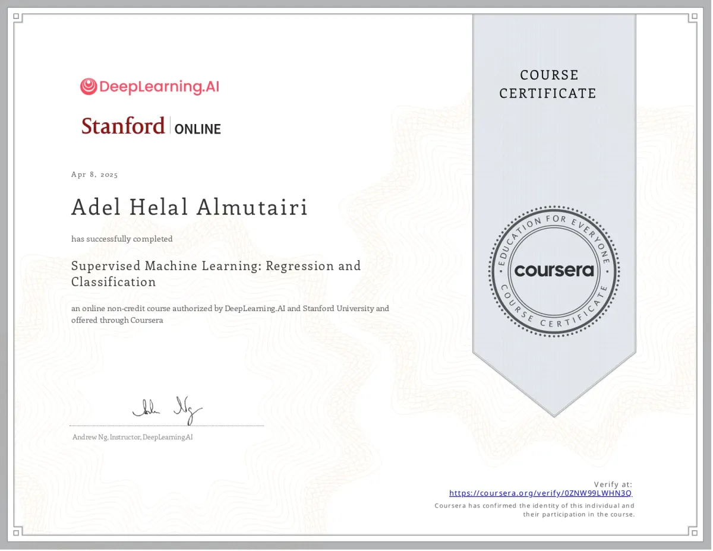
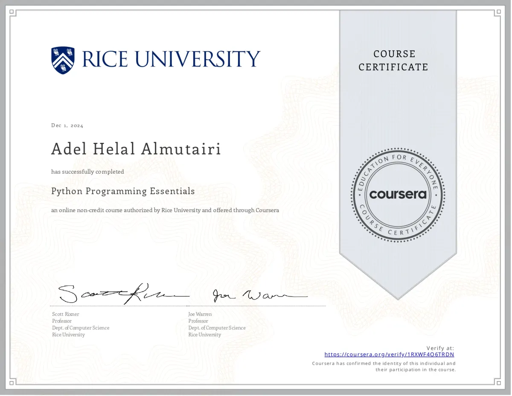
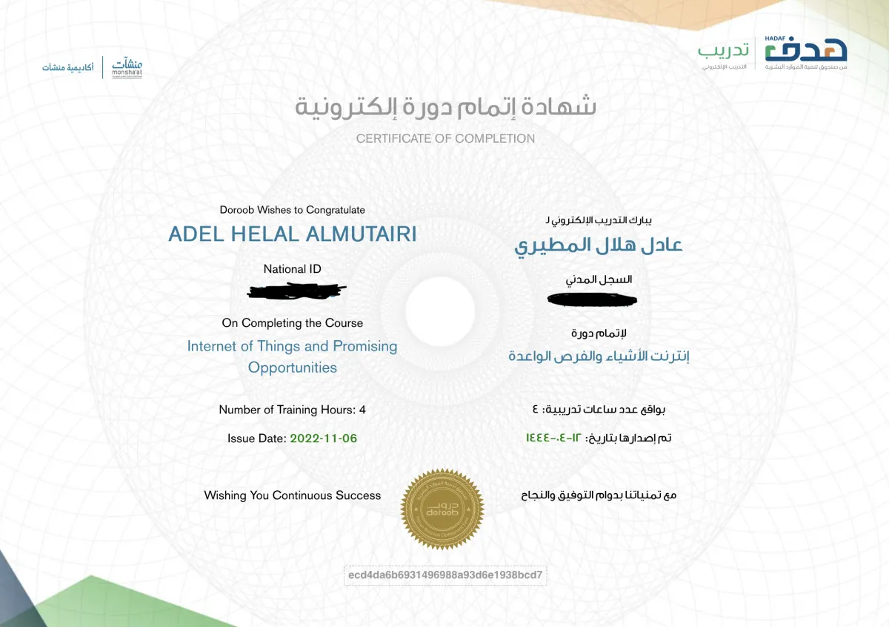

Bridging biology and computational science
Advanced bioinformatics solutions for genomic research and clinical applications
Genomics
Assembly, alignment, annotation, variant calling, and population genetics for whole-exome and whole-genome sequencing projects.
Phylogenetics
SNP analysis, tree construction, and comparative evolutionary studies to trace pathogen origins and relationships.
Metagenomics
Community profiling, functional analysis, and taxonomic classification for environmental and clinical samples.
Data Science
Statistical modeling, machine learning, visualization, and narrative reporting using Python, R, and HPC systems.
Professional journey in bioinformatics
Leading genomic analysis and research collaborations
Senior Bioinformatics Specialist
FEB 2026 - PRESENT • KAIMRCDesigning and maintaining computational pipelines to process and analyze biological data.
Bioinformatics Specialist
2024 - JULY 2025 • SAUDI FDALeading genomic analysis for food safety and public health initiatives. Conducting outbreak investigations, pathogen characterization, and surveillance monitoring using advanced bioinformatics workflows.
Research Collaborator
2024 • KSU, KFSHRC, IAUProvided bioinformatics support for MSc theses, focusing on bacterial genome analyses and antimicrobial resistance gene detection.
MSc in Bioinformatics
COMPLETEDDeveloped a computational workflow to predict and trace evolutionary relationships of transmembrane proteins in NCLDVs, utilizing AlphaFold to reduce experimental costs and accelerate research.
Recent work and research contributions
Innovative solutions in genomics and computational biology
Multi-task Deep Learning Model for TM-SP Prediction
Developed a multi-task deep learning model for predicting Transmembrane proteins and Signal Peptide, combining advanced neural architectures for protein structure prediction.
Click here to view the demoMetagenomics Analysis of Saudi Western Valleys
Identified plastic-degrading and biofilm-forming bacteria in soil metagenomes for environmental applications.
MAY 2025Phylogenetic Comparison in Salmonella
Benchmarked SNP-matrix phylogeny versus core genome MSA for Salmonella enterica isolates to improve epidemiological accuracy.
JANUARY 2025Genomic Analyses for MSc Collaborations
Assembly, annotation, and comprehensive analysis for multiple thesis projects across leading Saudi research institutions.
DECEMBER 2024Clostridium Outbreak Investigation
Applied comparative genomics to trace contamination sources in a food poisoning outbreak linked to Clostridium species.
NOVEMBER 2024Transmembrane Proteins in Giant Viruses
MSc research detecting transmembrane proteins in NCLDVs and exploring their evolutionary relationships using advanced computational methods.
MSC PROJECTAcademic and professional credentials
Continuous learning and professional development




Let's connect and collaborate
Available for opportunities in bioinformatics and genomic research
Riyadh, Saudi Arabia